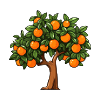
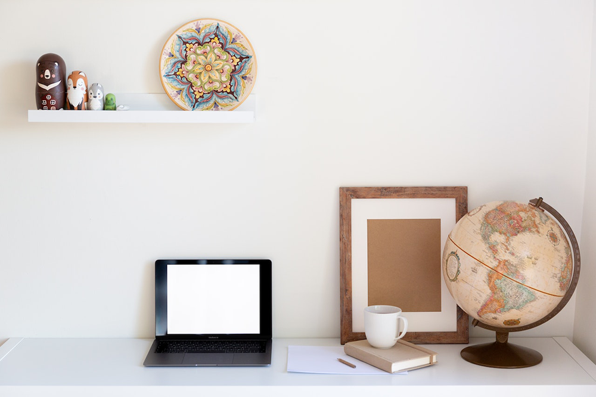

Nuestro desarrolo
En asturias
Es nuestra prioridad la calidad y rapidez de nuestros trabajos.

Es nuestra prioridad la calidad y rapidez de nuestros trabajos.
Es nuestra prioridad la calidad y rapidez de nuestros trabajos.

Nivel de Idiomas
Español
Ingles
Frances
este es un texto editable